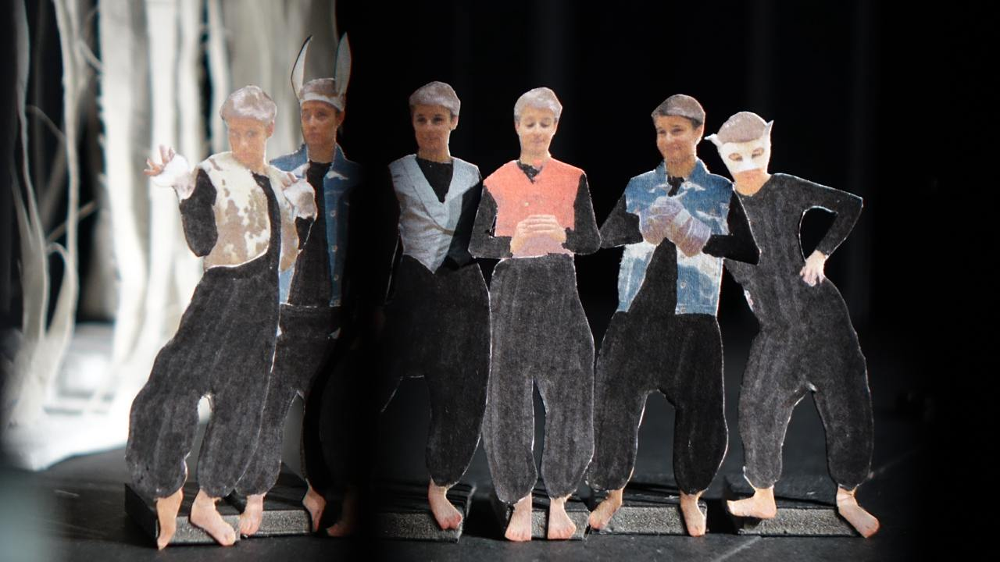

Theaterstück
Moving Stories
Junge Szene der Sächsischen Staatsoper im Labortheater HfBK Dresden, Dresden 2018
25 Jugendliche entwickeln innerhalb einer Woche gemeinsam mit Jan-Bart De Clercq, Marie Hausdörfer und Svenja Horn ein Stück zum Thema Träume. Es wurden Motive aus dem „Sommernachtstraum“ von William Shakespeare als Grundlage verwendet. Die Herausforderung bei der Kostümgestaltung bestand darin, ein flexibles, genderneutrales Kostüm zu entwi- ckeln, welches die Jugendlichen in jeweils sechs Rollen schlüpfen ließ


- 
Regie
Jan-Bart De Clercq, Marie Hausdörfer, Svenja Horn
Bühnen- und Kostümbild
Dorothee Voltz, Hanna Zeyer